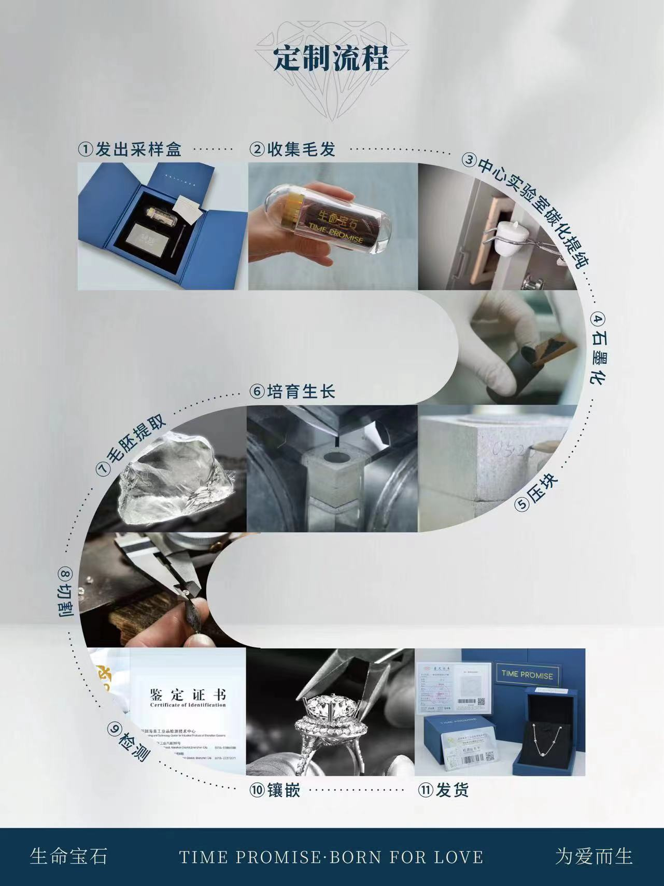

Memorial Diamond Wholesale Pricing Strategy: How Pet Cremation Services Should Price Memorial Diamonds
A framework for building your own pricing model: what markup ranges work, how to structure retail prices, what hidden costs to budget for, and how to negotiate volume discounts with your manufacturer.
TL;DR — Key Takeaways
Most pet cremation services use a 2× to 2.5× markup on wholesale cost, yielding ~60–70% gross margin after overhead.
Payment plans (3-month installments) can increase conversion by 30–50% for stones above 0.5 carat.
Hidden costs (shipping, insurance, staff time, payment processing) typically eat 5–10% off gross margin.
At medium volume (6–15 diamonds/month), negotiate 5–10% wholesale discounts; at high volume (16+), aim for 10–15% + priority queue.
Build a 3–5% remake budget into pricing from day one — this is the single biggest risk to your margin.
Adding memorial diamonds to your pet cremation service is one of the highest-margin moves you can make. The product is compact, requires no inventory, and sells for multiples of what you pay. But the pricing can be confusing if you have never sourced lab-grown diamonds before. This guide breaks down the markup framework: typical wholesale-to-retail ratios, profit margins, pricing strategies, and the hidden expenses that eat into your bottom line — without locking you into fixed numbers, so you can build a model that fits your market.
Key Takeaway: At a standard 2x to 2.5x wholesale markup, a pet cremation service can typically clear 60–70% gross margin per memorial diamond sale after accounting for overhead. With zero inventory investment and no storage costs, the return on effort is hard to beat.
What Drives Wholesale Cost (So You Can Estimate Your Own)
Memorial diamond wholesale pricing is not random. It is driven by how long the diamond stays in the growth press, how much energy the process consumes, and how much labor goes into cutting and certification. Here is the framework for understanding what you will pay a reputable manufacturer, so you can build your own retail pricing model:
Carat Size
Typical Wholesale Cost Range
Suggested Retail (2x markup)
Approximate Gross Margin
0.5 carat
Consult your manufacturer
2× wholesale cost
~60–70% after overhead
1.0 carat
Consult your manufacturer
2× wholesale cost
~60–70% after overhead
1.5 carat
Consult your manufacturer
2× wholesale cost
~60–70% after overhead
These ranges assume the manufacturer handles everything from carbon purification to certification. If a supplier quotes significantly lower prices than the market, ask what is missing. Often, the gap comes from skipping independent certification, using generic carbon instead of your client's actual sample, or outsourcing production to a third party with no quality control.
Colorless grades (D-F) add roughly 15-25% to the wholesale cost. Fancy colors add 20-40%. If your customers are price-sensitive, recommend near-colorless (G-H) as the sweet spot — it looks white to the naked eye and keeps the retail price manageable. For a deeper breakdown of what drives cost at the manufacturing level, see our cost breakdown analysis.
Retail Pricing Strategies That Work
Most pet cremation services use a 2x to 2.5x markup on wholesale cost. This is standard in the memorial diamond industry and is competitive with direct-to-consumer retailers. It also leaves room for discounts if a customer is hesitating.
At 2x markup, a 1.0-carat memorial diamond retails for roughly double what you paid wholesale. At 2.5x, the retail price is two and a half times your wholesale cost. Both prices are within the range that customers expect based on online research. The key is transparency: customers who know they are buying a real diamond with a real certificate will accept the price if you explain why it costs what it does.
Pricing psychology matters here. Customers do not buy memorial diamonds every day, so they have no reference point. A price for a 0.5-carat diamond sounds reasonable if it is presented as a permanent, one-of-a-kind keepsake with a certificate. The same price sounds high if it is presented as an upsell. The framing is everything.
One effective strategy is to anchor the price against alternatives. A high-end urn might cost a few hundred dollars. A memorial garden stone might cost a couple hundred. A 0.5-carat diamond at 2x markup is only a modest multiple above the price of a premium urn, but it is a diamond — a gemstone that lasts forever and can be set into jewelry. That comparison reframes the purchase from "expensive memorial" to "reasonable luxury."

The manufacturing pipeline from carbon source to finished diamond: each step adds cost, but also adds verifiable value that justifies retail pricing.
Real Profit: What Stays in Your Pocket After Overhead
Gross margin is not net profit. After you mark up the diamond and collect the retail price, several costs come out before the money is yours. Here is the reality check:
Payment processing fees: 2.5–3.5% of the transaction. On a typical sale, this is a modest but non-trivial amount.
Shipping and insurance: Getting the diamond from the manufacturer to you, plus insured delivery to the customer. Budget for domestic express shipping plus declared-value insurance.
Packaging: A basic box and certificate folder costs a small amount. A premium presentation package with a branded box and care instructions costs more, but improves perceived value and customer satisfaction.
Staff time: Even if you already have staff handling customer inquiries, each memorial diamond sale requires 30–60 minutes of consultation, order entry, and follow-up. At typical labor cost, this is a meaningful per-sale expense.
Remakes and returns: Budget for 2–5% of orders requiring a remake or adjustment. A remake costs you the wholesale price of a second diamond, so this is the biggest risk to your margin.
Add these up and your net profit on a typical 1.0-carat diamond at 2x markup is roughly 50–60% of the gross margin after all expenses — still a very strong return for any product, let alone one you never have to stock.
Want to See the Manufacturing Process?
Understand the full production pipeline from carbon extraction to final certification, and see exactly where your wholesale costs come from.
The simplest approach is to publish a price list with 3-4 standard sizes and let customers self-select. But there are tactics that increase average order value and conversion rate:
Package bundles: Pair the diamond with a setting (pendant, ring, or bracelet) sourced from a jewelry supplier. The bundle price is higher than the diamond alone, but the customer perceives better value. You earn a margin on both the diamond and the setting.
Payment plans: A 3-month installment plan removes the sticker shock. The customer pays a fraction of the total cost per month instead of facing the full price upfront. This increases conversion by 30–50% in most markets. You pay the manufacturer the wholesale cost upon delivery and collect the retail price over time.
Size anchoring: Present three options: a small carat size, a medium carat size, and a large carat size. Most customers will choose the middle option. The high-end option makes the middle one look reasonable, and the low-end option makes the middle one look like the smart choice. This is called the "decoy effect" and it works in every industry.
Commission structure: If your staff is selling the diamonds, a commission of 10–15% of the retail price keeps them motivated without destroying your margin. On a typical sale, this is a meaningful but manageable cost — leaving you with solid net profit after all other expenses.
Volume Discounts: Negotiating Better Terms With Your Manufacturer
Once you are selling a meaningful volume of memorial diamonds per month, you have leverage to negotiate better wholesale pricing. Most manufacturers offer tiered discounts based on monthly or quarterly volume:
- Low volume (1–5 diamonds per month): standard wholesale price - Medium volume (6–15 diamonds per month): 5–10% discount - High volume (16+ diamonds per month): 10–15% discount + priority production queue
These discounts directly increase your margin. A 10% discount on a wholesale diamond saves you a meaningful amount per unit. If you sell at that volume consistently, the cumulative additional profit adds up quickly — all from better terms, not from doing more work.
Beyond price, negotiate for marketing support. A good manufacturer should provide: product images, technical descriptions, sample certificates, and training materials. If you have to create all of this yourself, it costs time and money. BioGem Lab's partner program includes white-label marketing materials, branded certificates, and training documentation as standard.
Hidden Costs Nobody Talks About
Every business has surprise expenses. Here are the ones that catch pet cremation services off guard when they first start selling memorial diamonds:
Customer education time: Your first 10 customers will ask a lot of questions. How does the process work? Is it really my pet's carbon? How do I know the diamond is real? Plan for longer consultations in the beginning. After 20–30 sales, your staff will have answered every question enough times that the process becomes routine.
Remake requests: Sometimes a customer changes their mind about size or color after ordering. Sometimes the diamond does not meet their expectations when it arrives. A fair remake policy is essential for trust, but it costs you the wholesale price of a second diamond. Build a 3–5% remake budget into your pricing from day one.
Insurance: You need to insure the diamond while it is in transit from the manufacturer and while it is in your possession before delivery. Most general business liability policies do not cover high-value goods in transit. A separate jewelry floater or inland marine policy adds a modest annual cost but is essential once you are handling significant inventory value monthly.
Website updates: If you add memorial diamonds to your service menu, you need a dedicated page with pricing, FAQs, and an order form. This is a one-time cost depending on whether you do it in-house or hire a developer, but it is unavoidable if you want to look professional.
The Bottom Line: Is It Worth It?
If you run a pet cremation service handling a meaningful volume of cremations per year, adding memorial diamonds is one of the easiest revenue streams you can adopt. You do not need inventory. You do not need a new facility. You need a supplier, a price list, and a staff member who can explain the product to customers.
Assume you convert just 5% of your cremation customers to memorial diamonds. At a modest annual volume, that is a handful of diamond sales. With a 2x markup and typical overhead, the annual profit contribution is meaningful — all for a service that requires no upfront investment.
At 10% conversion — which is achievable once your staff is trained and your customers know the option exists — the numbers become serious. The annual gross profit from a modest volume of sales at mixed sizes is enough to hire part-time staff, upgrade your equipment, or simply increase your take-home pay.
The risk is low because you only order the diamond after the customer pays. The only upfront cost is the time it takes to train your staff and update your marketing. If you want to test the market before committing, start by offering 0.5-carat diamonds only. They are the easiest to sell, the fastest to produce, and the lowest risk if a customer requests a remake.
For pet cremation services ready to explore memorial diamonds as a revenue stream, contact BioGem Lab directly for wholesale pricing, sample evaluation, and partnership terms.
Patent Notice: BioGem Lab's carbon extraction and purification technology is protected under CNIPA Patent No. ZL 2010 1 0565778.9, with continuous refinement since 2012.
Frequently Asked Questions
How should a pet cremation service price memorial diamonds for retail customers?
Most pet cremation services use a 2x to 2.5x markup on their wholesale cost. This is standard in the memorial diamond industry and is competitive with direct-to-consumer retailers. The exact wholesale cost depends on carat weight, color grade, and certification level. A 2x markup typically yields a 60–70% gross margin after accounting for packaging, shipping, staff time, and payment processing fees.
What retail pricing strategy works best for memorial diamonds?
A 2x to 2.5x markup on wholesale cost is the industry standard. This pricing is competitive with dedicated memorial diamond retailers and leaves room for discounts or package deals. Payment plans are also effective: a 3-month installment plan can increase conversion by 30–50% for stones above 0.5 carat.
What profit margins can a pet cremation service expect on memorial diamond sales?
At a 2x markup, the gross margin per sale is typically 60–70% after accounting for overhead costs such as staff time, packaging, shipping, and payment processing. With zero inventory investment and no storage costs, memorial diamonds offer one of the highest returns on effort in the pet aftercare industry.
Should pet cremation services offer payment plans for memorial diamonds?
Yes. Payment plans significantly increase conversion rates for memorial diamonds, especially for stones above 0.5 carat. A typical 3-month installment plan divides the total cost into manageable payments. The customer pays the full retail price over time, while the cremation service pays the wholesale cost to the manufacturer upfront or upon delivery. This requires working capital but increases accessibility for price-sensitive customers.
What hidden costs should pet cremation services budget for when selling memorial diamonds?
Beyond the wholesale cost of the diamond, budget for: (1) shipping and insurance for the finished diamond, (2) custom packaging and presentation materials, (3) staff training time, (4) marketing materials and website updates, (5) occasional remake or repair costs, and (6) payment processing fees. These typically add 5-10% to the total cost of goods sold.
Related Articles
EducationalMay 2026
Memorial Diamond Cost Breakdown: What Drives the Price
Detailed analysis of memorial diamond pricing components: synthesis duration, purification complexity, carat weight, color grade, and certification costs.
BioGem Lab supplies white-label memorial diamond manufacturing to pet cremation services, veterinary clinics, and memorial businesses. Zero inventory. Full brand control. ~60-day turnaround.